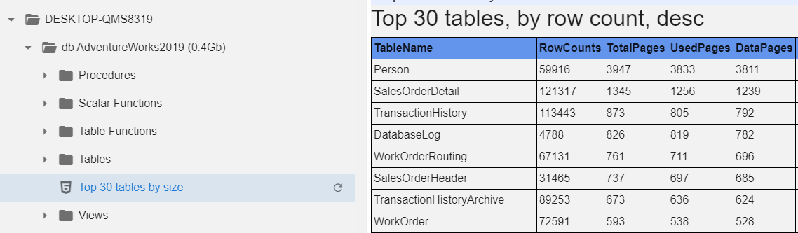
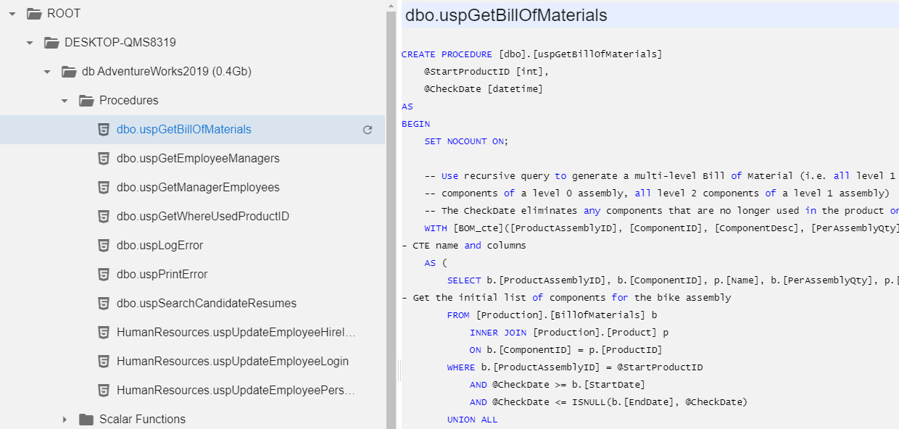
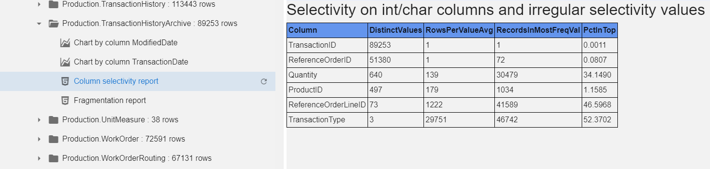
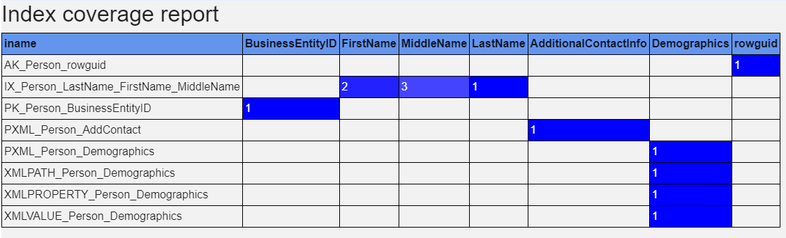
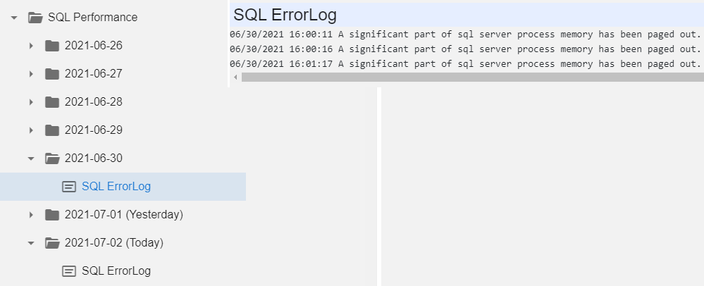
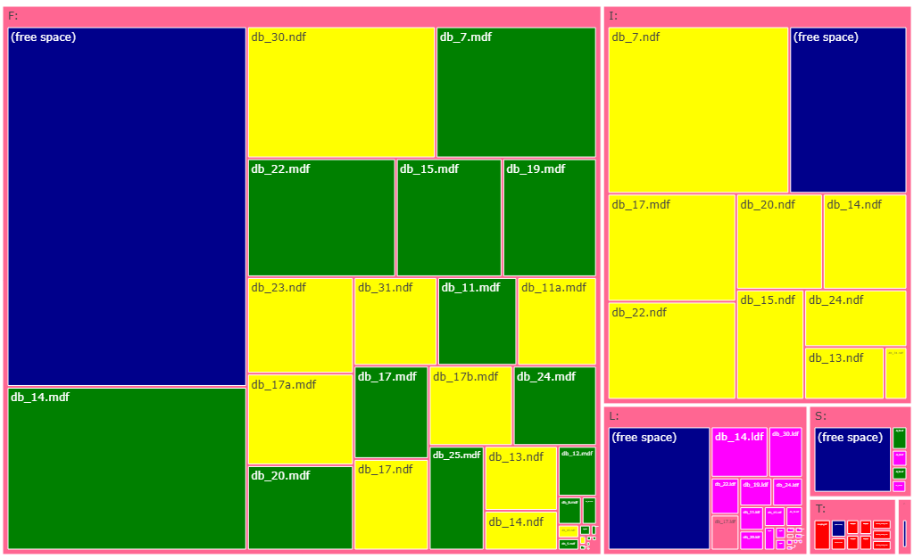

MSSQL module
Download the
module and modify ROOT_MSSQLstub.ps1 -
out of the box it lists just the current server. You will probably
want to add more from one of the inventories. When connection strings
contain passwords, it is recommended to write them in the following
format: ###secretname###, and the value for the secret is
stored in config.js file and is not sent to a client (and can not be
debugged using F12-console). Contribute more on Github.
This module exposes a lot of SQL server statistics, metrics, and even
source code. No actual data is exposed, only aggregations. You can add
reports to select data from specific tables, which you consider
technical, so there is no sensitive data inside. All other reports
should be safe. Still, some sensitive data can leak thru queries, for
example, in Activity Monitor in the hard-coded constants of the
queries in WHERE conditions, for example. You can add something like
$v = $v -replace "'([^']{2,})'", "'str'" -replace "[0-9][0-9]+", '999'
to replace all big numeric constants with 999 and 'long strings' with
'str', leaving simple values like =0, =1, ='Y', ='N' intact.
Here is the big picture:
At the top level, we have server-wide statistics:
- List of databases with their sizes, you can open any database to get database-wide statistics
- Expensive queries (similar to what you have in Activity Monitor)
- Current activity for 10 seconds - the main difference from the previous option is that it is based on sysprocesses and delta in CPU for the last 10 seconds
- Report on used and free space in all databases and top 3 biggest tables so you can easily spot where the disk space is being used and what to shrink
- SQL agent Jobs status, their last durations and failures are shown in red
- Current locking
- SQL server CPU for the last 256 seconds from a ring buffer - a chart
- Performance can be expanded to get statistics on the specified day
At a database level we can get the 'biggest tables report' we usually use in SSMS and much more:
We can open any programmatic objects (functions, views, procedures) to inspect the code to confirm that it is really the version we expect. Of course, you can't change the code, it is read only.
When you expand the table list, you can see the number of records in the tables.

Column selectivity report spots values with low and irregular selectivity. Column RecordsInMostFreqVal is the number of records with the 'top 1' value. The last column in the same in percent to the total number of rows, so you can see that while there are 72 distinct values in ReferenceorderLineID, 46% has the same value. Probably it is ID=1, but Bell hides any actual data from a user.
The fragmentation report shows how badly data is fragmented, and charts (Chart by Columns...) are created for all datetime columns, so user can check the distribution - the number of values by date.
The index coverage report lists all columns, covered by any index at least once. Leading column in an index is marked with '1', second with '2' etc. Yuo can easily spot over-indexing and bad indexing.
Finally, in SQL server Performance, we can filter SQL error log by day:
NEW: TreeMap of table and index sizes
in every database and on a server at whole.
Color represents:
Green - clustered indexes
Blue - nonclustered indexes
Red - heap
Yellow - columnstore indexes
Magenta - other types of indexes (XML, spacial etc)
Note: on a screenshot below table and index names are obfuscated -
data was taken from a real production system
NEW: Visualization of the execution of
the SQL agent jobs.
Different steps are represented with different colors
Failed steps are marked with red line crossing the box
Executions yesterday, day before yesterday and more days
ago are displayed slightly shifted upwards, but colors are
progressively pale
Note: on a screenshot job names are obfuscated - data was taken from a
real production system
NEW: Visualization of the layout of the database files across the drives with the relative file size and size of the free space. Similar visualization exists for the IO by database file - reads and writes. Note: on a screenshot database file names are obfuscated - data was taken from a real production system
